COMP 2406 - Winter 2023 Tutorial 01
Hello Client-Server
© L.D. Nel 2023
Revisions:
revisions will be noted here - none yet.
Description:
The purpose of this tutorial is to get you started working with node.js and javascript. Basically to ensure you are able to launch node.js and do some simple investigation of javascript server code and learn some basics of html and css.
IMPORTANT: To do this tutorial you must first have set up your machine by installing node.js and npm. The lecture notes 00 Node and NPM Installation section of the course website has some screen capture install instructions for Window , Mac OS and Linux. Nodejs is obtained from the node.js site: https://nodejs.org .
The easiest place to start is just to install node.js natively on your machine. (The Windows machines in the computer lab should also has node installed.) Once you get comfortable you can try the openstack linux images.
The tutorial and code files are available on the course content website and there should also be a ALL FILES ZIPPED.zip with all the files so you can download them all at once.
As background for this tutorial go through some of the basics of javascript, html, and css (and in particular javascript strings) at: https://www.w3schools.com/js/
Important: tutorials are meant to be started and submitted as homework. You can come and get help each week at the your registered tutorial session but it's best to get started before the session.
Tutorial Grading: To get credit for weekly tutorials you need to submit to brightspace your code and a ReadMe.txt file with at least your name, student number and the link to your YouTube screen capture demonstration video. The video should have sound narration and demonstrate that you have met the tutorial requirements. (Make sure your video is "unlisted" and not "private" on YouTube - otherwise we won't be able to view it and it will be counted as missing. Submit a single .zip file with all your contents to Brightspace. Brightspace should allow you to resubmit your file up until the due time and will only keep the most recent submission. Grade is 0,1, or 2 as follows:
| Mark | Tutorial Grading |
|---|---|
0marks |
No submission or incomplete submission. Submissions without accompanying video get a mark of 0. Note: mark is 0 if any of the following are true:
|
1mark |
Some, but not enough, requirements met or demonstrated. Note: mark is only 1 if any of the following are true:
|
2marks |
All requirements met and demonstrated in accompanying video for required problems. Does not include problems labelled as "Optional" |
Instructions:
Overview
In this tutorial you will run the "Hello World" demo on your own machine. To do these exercises you need to open a command-line terminal window on the directory where the code is that you want to execute.
IMPORTANT: To do this tutorial you must first have set up your machine by installing node.js and npm. The lecture notes 00 Node and NPM Installation section of the course notes shows installation for Windows and Mac.
The rest of this tutorial, and screen captures, will describe things from the Windows or MacOS experience with some screen captures from the Linux image (Mac OS should be similar).
To confirm the install open a command terminal and execute
>node -v
You should get the version number as a response (see screen capture below).
To confirm npm (node package manager) is installed execute
>npm -v
Finally to enter the node REPL loop (Read, Evaluate, Print, Loop) execute
>node
then try
>1+2;
and your should see the result
3
To get out of the REPL loop execute
>.exit
Here is what I see on my Mac (this term Winter 2023 the node.js version will likely be v18.x.x):
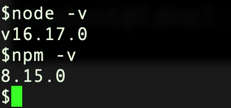
Problem 1)
Download the file in the tutotial 01 demo_code folder called server.js and place it in a convenient directory. Open a CMD terminal to the same directory.
In the CMD window execute: node server.js You should now have a simple server running listening for client HTTP requests coming to port 3000. (You can stop the server by typing CNTL-C.)
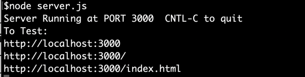
Open a web browser, like Chrome, and go to the url address: http://localhost:3000/index.html or alternatively http://127.0.0.1:3000/index.html (This is the loopback address by which you can talk to yourself over the internet. localhost always maps to IP address 127.0.0.1) The screen captures are for the Chrome browser and the rest of the tutorial, and course, will discuss things from the point of view of the Chrome (the "official" course browser).
Your browser should show:
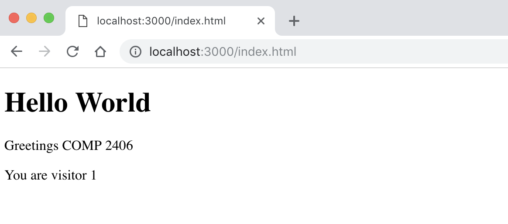
You now have a simple HTTP server running. Hit the page refresh a few times on your browser. See what happens to the visitor counter being output. (It might, or might not, appear to increment the visitor counter by 2 each time you refresh.)
You can quit the server, by typing CNTL-C in the command terminal you used to launch it.
Open the server.js file in your the text editor. The code should look something like:
/*
COMP 2406
(c) 2022 Louis D. Nel
Example Simple Server that is prepared to receive GET and POST HTTP requests.
GET requests handle the URL requests from a browser.
POST requests are intended to handle form data.
Launch server with
node server.js
Testing:
Use browser to view pages at
http:localhost:3000
http:localhost:3000/
http://localhost:3000/index.html
Cntl+C in console to stop server.
*/
const http = require("http") //needed for http communication
const url = require("url") //used to parse url strings
let visitorCounter = 0
http.createServer(function(request, response) {
let urlObj = url.parse(request.url, true, false)
console.log("\n============================")
console.log("PATHNAME: " + urlObj.pathname)
console.log("METHOD: " + request.method)
let receivedData = ''
//Event handler to collect message data that might
//arrive in chunks (several smaller TCP/IP messages)
request.on("data", function(chunk) {
receivedData += chunk
})
//Event handler for the end of the message data
request.on("end", function() {
console.log("received data: ", receivedData)
console.log("type: ", typeof receivedData)
visitorCounter++
if (request.method === "GET") {
//Handle HTTP GET requests from browser
if (urlObj.pathname === "/" || urlObj.pathname === "/index.html") {
//ROUTE / or /index.html
response.writeHead(200, {
"Content-Type": "text/html"
})
response.write('')
response.write('<html>')
response.write('<head>')
response.write('</head>')
response.write('<body>')
response.write('<h1>Hello World</h1<')
response.write('<p>Greetings COMP 2406</p>')
response.write(`<p>You are visitor ${visitorCounter}</p>`)
response.write('</body>')
response.write('</html>')
} else {
//ROUTE unknown
response.writeHead(404)
response.write("ERROR: PAGE NOT FOUND")
}
response.end() //send response to client
} //end get
//if it is a POST request then echo back the data.
if (request.method === "POST") {
//Handle POST requests
console.log(`POST receivedData: ${receivedData}`)
//respond to client
response.writeHead(200, {
"Content-Type": 'text/html'
})
response.write('')
response.write('<html><head></head><body><p*>Thanks for your request</p></body></html>')
response.end() //send just the JSON object as plain text
} //post
}) //request on
}).listen(3000)
console.log("Server Running at PORT 3000 CNTL-C to quit")
console.log("To Test:")
console.log("http://localhost:3000")
console.log("http://localhost:3000/")
console.log("http://localhost:3000/index.html")
Study this code and start to get familiar with this simple server. You are not expected to understand it all at this point -just get to know the style of the code. (especially notice the nested declaration of a function with no apparent name, and lots of nested levels of brackets.) Also start noticing that javascript has three styles of string literals: 'Lou', "Lou", and `Lou` -and people mix and match them everywhere.
Problem 2)
Next lets look at the network traffic between the browser client and the server. We will describe this from the perspective of the Chrome browser (or Chromium on linux). (You will have to do some research to see how to locate the developer tools for other browsers if you don't want to use Chrome.)
Shut down the server (CNTL-C) and restart it to reset the visitor counter.
This time open the Chrome browser but before you visit the page open its developer tools as follows. (Menu icon/More Tools/Developer Tools)
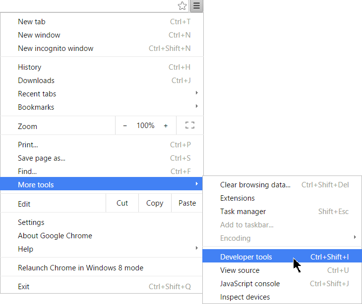
Click on the Network tab to so it will show HTTP messages between the browser and the server.
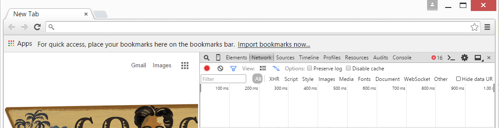
Now with the developer tool open visit http://localhost:3000/index.html and you should see the traffic between the browser and server.
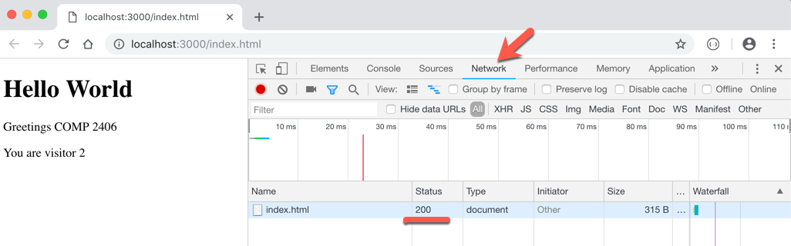
Click on the message marked "index.html" and it should open a details window as shown below (look in the Headers tab).
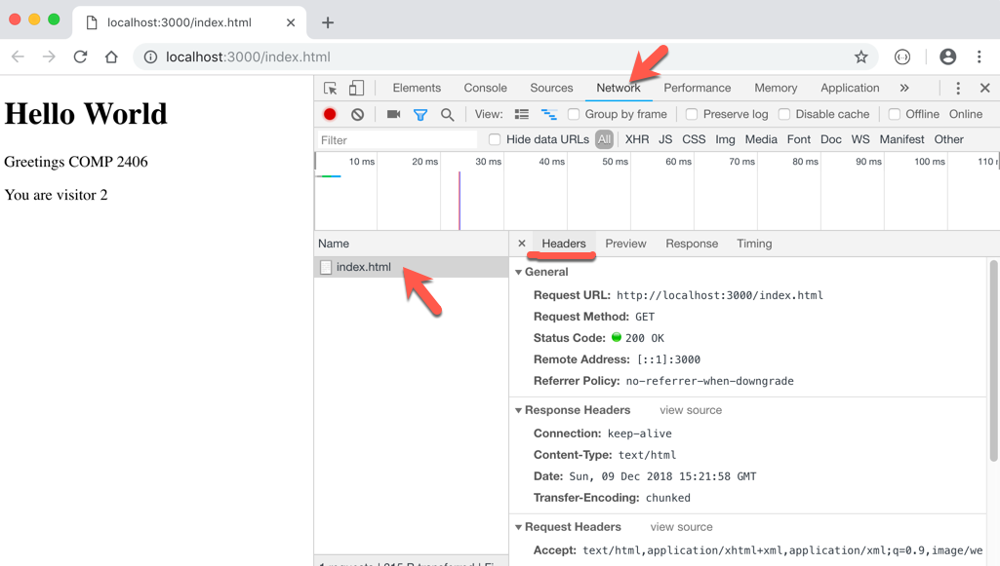
In this details window locate the following bits of information:
The URL being visited.
The HTTP request method (e.g. GET, POST, ...).
The status code of 200 sent back to the browser indicating success.
The MIME (Multipurpose Internet Mail Extensions) Content-Type of the response data. It would be text/html.
Being able to find this information is going to be essential for debugging client-server code in this course. Look at some of the other information that is part of this message. The Request Headers are information that comes from the browser as part of the HTTP request to the server and the Response Headers are part of the information that is sent back to the browser from the server in the HTTP response from the server.
IMPORTANT ERROR MESSAGE
It will likey happen to you in the course that you try to start a server with, say, node server.js and get the following EADDRINUSE :::3000 error message. It means you already have a server running on the same port (3000). Find it and shut it down. Likely it's represented by another terminal window on your machine.
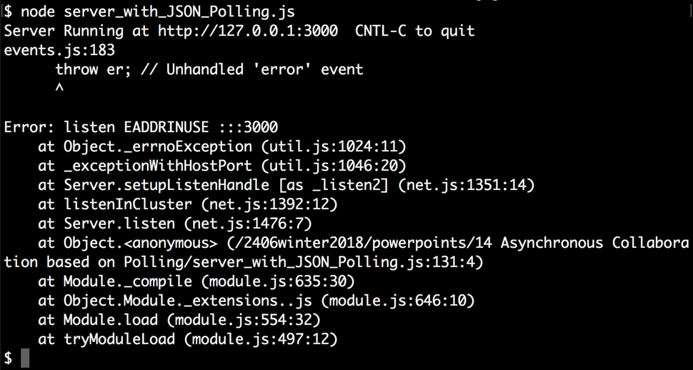
Problem 3)
The request and response mentioned in the previous question are, in fact, represented by the request and response arguments in the createServer(function(request,response){...}) callback function in the server.js code. It is called a "callback" function because it will be "called back" when a HTTP request comes in. The callback function examines the request object to see what the client wants and builds up the response object to represent the response that will be sent back by the server. Once the response is completed it is ended with response.end() which results in a final HTTP response message being sent back to the client.
We are interested in actually getting access to some of this information in the request object within our server javascript. That is, we want to extract information from the request object that arrived with the HTTP request.
Javascript objects are just collections of key-value pairs. You can examine javascript objects by printing the key-value pair contents. Examining the key-value pairs of objects will be one of the most important debugging techniques in the course. Lets do that with the request object to extract information about what the client might want.
Add the following code to the server javascript (just before visitorCounter++ statement) and then restart the server.
console.log('request:' + request)
console.log('\nREQUEST OBJECT KEYS (own property):')
for(k in request) if(request.hasOwnProperty(k)) console.log('key: ' + k)
This time when we run the server we should see output on the server console like the following.
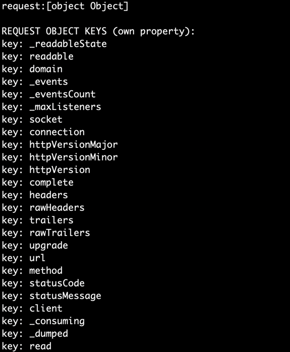
If you want to see what type of data is associated with each key use the following code instead:
console.log('request:' + request)
console.log('\nREQUEST OBJECT KEYS (own property):')
for(k in request)
if(request.hasOwnProperty(k)) console.log('key: ' + k + ' typeof: ' + typeof request[k])
All objects in javascript are collections of key:value pairs. Here we are seeing all the keys of the request object. Keys are just javascript strings but the values can be any javascript type. Again: examining the request and response object's contents will be essential for debugging code in this course.
Notice among this output we appear to be intercepting the URL of the resource the client is requesting and the HTTP method. Lets look at their values to see if they match what we saw in the browser.
Modify the code to only show those fields, So now our code would look like:
console.log("url: " + request.url)
console.log("method: " + request.method)
and the corresponding output when visiting http://localhost:3000/index.html would look like:
Now try visiting http://localhost:3000/
The output should now show:
Finally try visiting http://localhost:3000/index.html?name=Louis and the output should be
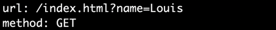
So we are able to intercept with our server's javascript the resource the client wants including the query string portion (the part after the "?" in the URL).
It's also very useful to see the keys and values of the request object's headers.
Try adding the following code and see what you get. What do you suppose this type of information from the client message might represent (yours will look similar but not exactly the same as below)?
console.log("request headers:")
console.log(request.headers)
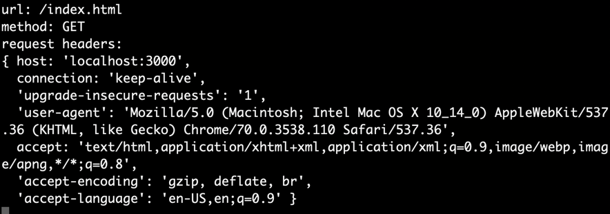
Problem 4)
For the next problem we want to add some css styling to our index.html webpage. To see how basic css styling works visit the w3schools css tutorial site: https://www.w3schools.com/css/.
Add some css styling by adding <style></style> tags in the <head> section of the html that the server sends back to the client. For example, style the index page to look like this:
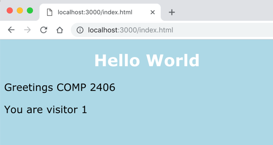
Problem 5)
Create a new route (that is, an if-statement section) in the server that provides a /login.html option that will serve an HTML page with a form to the client. To learn more about html forms visit: https://www.w3schools.com/html/html_forms.asp
Make the "action" attribute of the form:
<form action="/credentials">
Serve a form that would allow the user to enter a userid and password. (Using the styling from the previous question it might look like the following.)
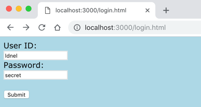
Enter a name an password and press the submit button. Notice a GET request is sent to the server and that the form data is in the URL's query string portion and is in the URL address field of the browser.
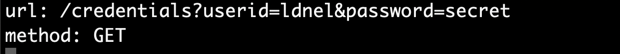

Notice also the ERROR: PAGE NOT FOUND response is sent back to the client by our server.
You should also modify the server's launch output so the console includes the /login.html suggestion when the server launches. We will be asking you to include these prompts in all your course assignments.
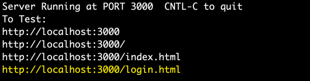
Problem 6)
Modify the "action" attribute of the form by also including the method attribute:
<form action="/credentials" method="POST">
Restart your server and again visit the http://localhost:3000/login.html URL
This time when you enter the userid and password information and click submit you will notice the POST route in our server runs for the first time (which would have access to the login data via the request object) and that the user data is NOT in the URL shown in the browser. (It is, in fact, in the body of the HTTP POST message.)
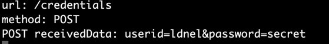
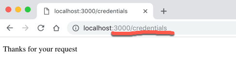
Notice our server sends back a "Thanks for your request" page back to the client when it handles the client POST request.
When you have completed these problems create a screen capture video that demonstrates you've completed problems 4, 5 and 6. Submit your code and readme.txt file (containing your YouTube link) to brightpace.Â
Optional Work)
If you solve the optional problems and like your solutions post your code for the optional parts on Discord for others to enjoy.
Here are some optional problems
1)If the client visits http://localhost:3000/index.html?name=Louis we want the server to respond with "Hello Louis" instead of "Hello World". Obviously we want it to work with any name -including yours.
So we want to extract the portion of the URL string after ?name= and use that to replace "World". To keep things simple lets just make it to work if the URL string ends with ?name=aName. We will just do some javascript substring operations to extract the name. For example
replace code in the server like:
response.write("Hello World")
with something like the following instead:
let urlString= request.url
let index = urlString.indexOf("?name=")
if(index > 0){
let name = urlString.substring(index + "?name=".length, urlString.length)
response.write("Hello " + name)
}
else
response.write("Hello World")
2) Our proposed solution to the previous problem would work for visiting http://localhost:3000/index.html?name=Louis but would not work if the client visits URL's like:
http://localhost:3000/index.html?name=Louis&email=ldnel.com
Can you make it work more generally. That is, extract the ?name= portion from a more complex URL query string.
3) Can you modify the server code to not just say "Thanks for your request" when the user provides login credentials but rather say "Thanks user: ldnel for your request". That is, thanks the user by the user id they supplied.